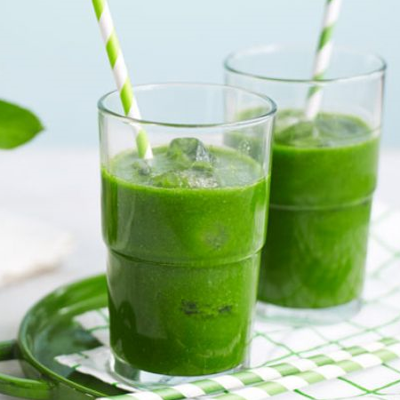

Low-sugar lime & basil green juice

Ingredients :
- 70ml chilled apple and elderflower juice
- 50g baby spinach
- 20g basil leaves
- 6cm piece of cucumber (about 100g), chopped
How to make :
- Pour the apple juice into a large jug then add the spinach, basil, cucumber, lime and 100ml chilled water.
- Blitz really well with a hand blender until very smooth. Pour into a glass and drink straightaway.